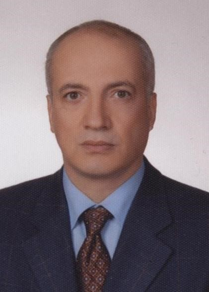

İstanbul Tıp Fakültesi · Perinatoloji
Prof. Dr. Alkan Yıldırım

Özgeçmiş
Akademik Kariyer
Prof. Dr. Alkan Yıldırım, İstanbul Tıp Fakültesi'nden 1981 yılında mezun olmuş ve kariyerini perinatoloji alanında sürdürerek 1999 yılında profesör unvanı almıştır.
40 yılı aşkın klinik deneyimi ile fetal anomaliler, prenatal tanı yöntemleri ve riskli gebelik yönetimi konularında kapsamlı hizmet sunmaktadır.
1981
İstanbul Tıp Fakültesi
mezuniyeti
mezuniyeti
1999
Profesörlük unvanı,
Perinatoloji Uzmanı
Perinatoloji Uzmanı
Bilgi Merkezi
Konu Başlıkları
Perinatoloji ve fetal anomaliler hakkında detaylı bilgi edinmek için bir konu seçin.
Muayene & İrtibat
Özel Muayenehane
Bahçelievler
Tel: (0212) 553-01-06
Tel: (0212) 506-94-94
GSM: (0532) 292-66-56
E-posta: dr.alkanyildirim@gmail.com
Başlık
Muayene & İrtibat
Özel Muayenehane – Bahçelievler
Tel: (0212) 553-01-06
Tel: (0212) 506-94-94
GSM: (0532) 292-66-56
E-posta: dr.alkanyildirim@gmail.com